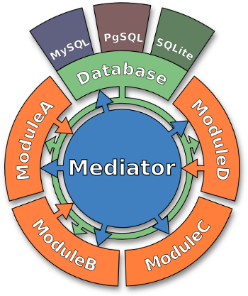

Messaging system¶
Scope¶
This chapter describes the messaging system used for exchanging parameter messages between different SeisComP modules during runtime.
Overview¶
A typical real-time SeisComP system consists of data processing and other modules (clients) and a messaging bus. The messaging bus connects all the clients letting them exchange information by messages through this bus. The messaging system is a fundamental concept of SeisComP following the publish-subscribe pattern 1.
Clients can be producers (sending messages) and/or consumers (receiving messages). The basic concept is really simple: A producer sends a message (some event parameter, arbitrary content) and a consumer read that message and tries to process it. That’s it. That is a very generic approach which requires clients to understand the message content of each other.
In SeisComP this common messaging language consists of well defined message types and contents. The vast majority of messages sent around are so called notifiers.
Notifiers inform about changes on the data model. They carry just three attributes:
The unique identifier of the parent object
The operation to apply (add, update or remove)
The subject
Speaking XML, a notifier looks like this:
<?xml version="1.0" encoding="UTF-8"?>
<seiscomp xmlns="http://geofon.gfz-potsdam.de/ns/seiscomp-schema/0.11" version="0.11">
<Notifier parentID="EventParameters" operation="add">
<Pick publicID="Pick/....">
<!-- All pick attributes will be placed here -->
</Pick>
</Notifier>
</seiscomp>
Each client that receives such a notifier will take further actions if the information meets its interest. A simple example is scautoloc. It receives Pick objects in the form as written above. It stores the pick to its internal data structures and when there are enough picks to form an Origin, it does its processing and probably sends an Origin as a result (again as notifier).

Schematic view on a distributed SeisComP system.¶
Queues¶
The messaging server (scmaster) manages a set of queues. Each queue is independent and clients can only connect to one queue at a time within one connection. Messages sent to a queue are sorted by their arrival time and forwarded to clients in exactly that order. That is called a FIFO (first in first out) queue.
For each queue a set of processors can be added where each message is piped through. One example is the dbstore processor which applies notifiers to a configured relational database management system (RDBMS).
One could configure scmaster with two queues, one for production which populates a database and one for playbacks which does not populate a database.
A client can be directed to either the one or the other queue:
connection.server = localhost/production
or
scautopick -H localhost/production
Groups¶
Groups are like topic filters for a message. A message is always being sent to a specific group or a specific client (peer-to-peer). A client can subscribe to one or many groups and it will only receive messages tagged with a group it has subscribed to.
For example scautopick processes waveforms sending detections or picks as pick notifiers to the PICK group. All clients subscribed to that group would also receive this information. If the queue is configured with the dbstore processor then it is guaranteed that the pick has been stored already in the database at the time of message arrival at the clients.
A consumer of the PICK group messages is scautoloc. Whenever it receives a new pick it will try to associate it or to locate a seismic event. After it succeeded it will send an origin to the LOCATION group and so on.
Database¶
The database is populated with all kind of information which might depend on each other. It is crucial for operations that write operations are well synchronized. Part of the messaging contract is that clients get read-only database access from scmaster and that they will never attempt to write into the database. In a fully-fledged SeisComP system the only instance that is allowed to populate the database is the dbstore plugin of scmaster.
Module distribution¶
The messaging server accepts TCP/IP connections enabling a module actually running anywhere in the network. It happens that this concept is not understood and users run on each computer another scmaster instance to offload processing to more computers. Unfortunately each scmaster instance is configured with the same database connection which will most likely cause data inconsistencies because each group of modules which is connected to an scmaster instance does not know about the other scmaster clients and therefore ignore the sent updates.
The correct approach is to run one scmaster on computer A which populates database X. Modules running on computer A, use
connection.server = localhost/production
while modules running on computer B use
connection.server = computerA/production
The database connection which is used by scmaster will be sent to the clients when they connect so no explicit database configuration is necessary.
Web frontend¶
When running scmaster a web frontend is available which can be adjusted to provide system information. The default port to access the web frontend is 18180:
firefox localhost:18180


{kind=link}